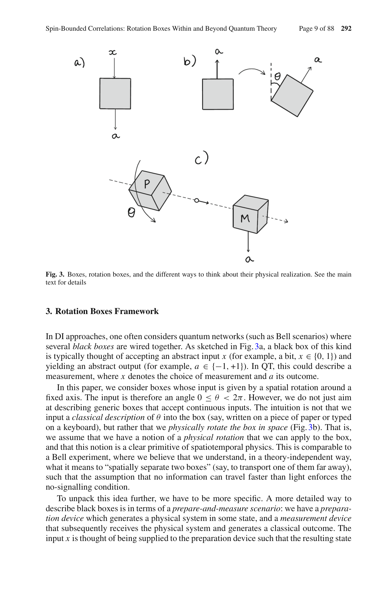
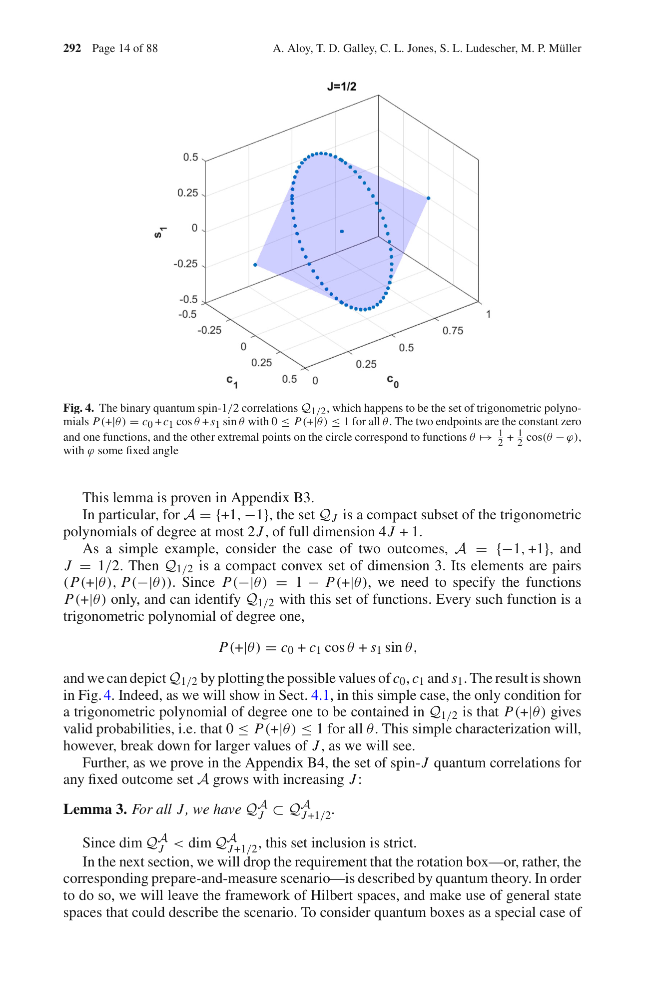

저자: Albert Aloy, Thomas D. Galley, Caroline L. Jones, Stefan L. Ludescher, Markus P. Müller | 날짜: 2024-11-15 | DOI: 10.1007/s00220-024-05123-2

Fig. 3. Boxes, rotation boxes, and the different ways to think about their physical realization. See the main
이 논문은 공간 회전 대칭성에 대한 탐지기 클릭 확률의 응답을 분석하는 'rotation boxes' 프레임워크를 제시하며, 양자 이론이 스핀 0, 1/2, 1에서는 가장 일반적인 회전 상관관계를 허용하지만 스핀 3/2 이상에서는 양자 이론을 초과하는 자원이 존재함을 증명한다.

Fig. 4. The binary quantum spin-1/2 correlations Q1/2, which happens to be the set of trigonometric polyno-
총평: 이 논문은 스페이스타임 대칭성이 확률 이론의 구조를 제약하는 방식을 엄밀하게 분석하는 창의적인 접근을 제시하며, 양자 이론의 특수성을 새로운 관점에서 조명하고 반고전 장치 독립 응용으로의 연결을 시도한 의미 있는 기초 연구이다.